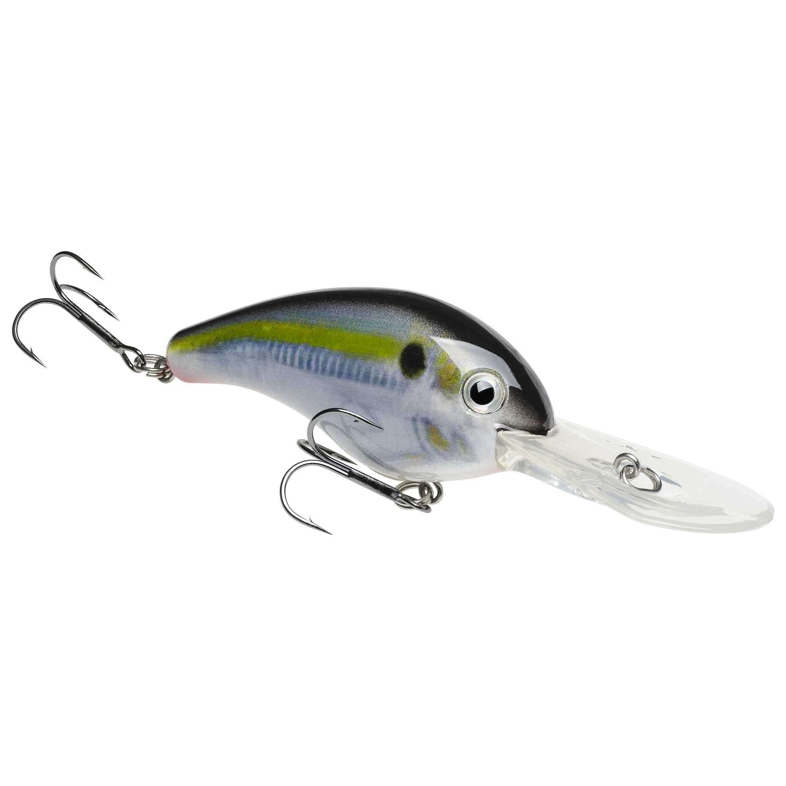

The Whopper Plopper is a hard plastic spook-style, with a rotating propeller section on the rear.
It imitates an injured baitfish in its death throes, splashing about on the surface.

A crankbait is a moving bait made for catching
the predatory species of fish under the surface as a moving animal imitating a baitfish in its environment.